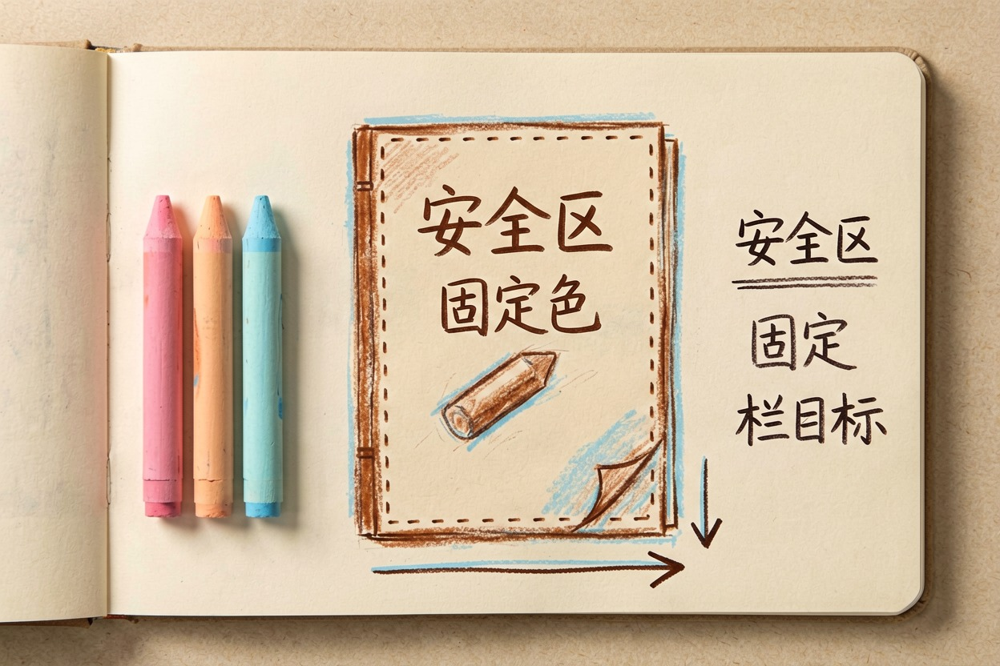
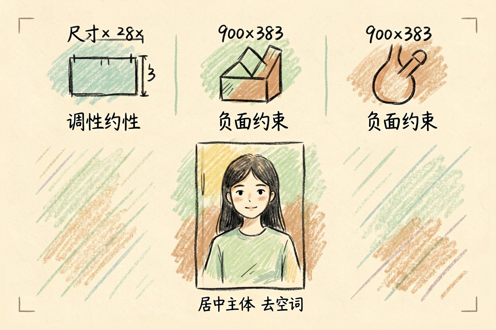
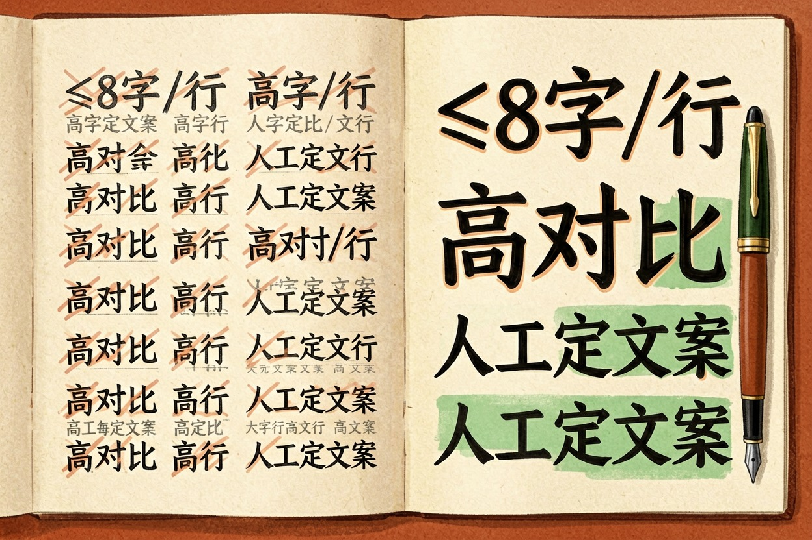
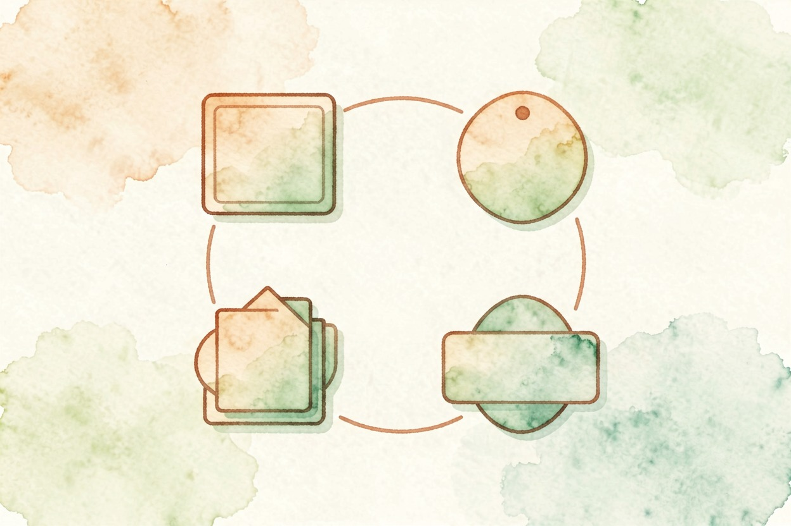

用 AI 做公众号封面图？尺寸与风格统一 — Learntide
封面图别张张现想。先把比例、底色和栏目感觉定成一套模板，再批量出图。
ai做公众号封面：先把比例和调性定死

ai做公众号封面最容易乱的，是每期风格各唱各的。今天冷灰明天亮粉，读者刷到根本不像一个号。
动手前先定一套规范。比例用 2.35:1 的封面尺寸，底色选一两支品牌色，栏目各有固定角标。规范写下来，后面期期照着来。
栏目调性要分开。干货文偏冷静，活动文偏热闹，但同栏目的封面得长得像一家，靠角标和底色区分就够了。
比例别凭记忆。去后台量一遍真实显示区，上下会被裁掉一截，关键信息要留在中间安全带。
规范也别锁死。每季度看一眼数据，哪类封面点击高就多偏，死守旧模板反而掉量。
给模型一段能用的提示词

规范有了，提示词就稳了。把尺寸和调性写进每条要求。
你是公众号封面设计师。请生成一张文章封面。
栏目：产品干货
尺寸：900 x 383，横版
调性：冷蓝底、留白多、细线条
元素：左侧大留白放标题，右侧一枚简洁图标
限制：不要人脸、不要渐变、不要花哨装饰
输出：构图说明 + 可生图提示词出图后先看裁切。封面在列表里只露中间一条，两边再好看也被切掉，主体必须居中。
同一栏目多跑几张。挑构图最稳的那张，别被惊艳但危险的图带偏，安全比出挑重要。
提示词也别太长。把「高级」「大气」这种空词去掉，换成可执行的限制，模型才不跑偏。
首图和次图要分开对待
封面分首图和次图，待遇不同。首图在文章顶部最大，次图只在转发卡片露一小块。
次图更要耐裁。字体大一点，主体满一点，缩成小图还能认，才是合格的次图。
标题别压满。留两成空白给视觉呼吸，密密麻麻的字读者懒得点，留白反而显高级。
首图可以有一点景深。浅景深让主体跳出来，但别虚到看不清，否则手机上更糊。
保持一个号的视觉一致

想长期统一，就建一套模板。每期只换标题和图标，底子和角标不动，号才像号。
配色锁死两支。主色加辅助色够用，今天换明天的色，积累下来就是杂乱。
别让模型每期自由发挥。也别在封面上堆三个重点，读者扫一眼只记得住一个。
模板也要留版本。v1 v2 记清楚，哪版数据好就回退，别凭印象乱改。
角标也别乱换。每栏目固定一个图标，读者看角标就知道栏目，换来换去反而费解。
封面上的标题怎么排
标题字别太小。封面在信息流里就指甲大，字小了根本读不到，白白浪费位置。
字数要收。一行别超八个字，两行封顶，太长就断成短句，扫读才顺。
颜色要和底图拉开。浅底深字或深底浅字，对比够才清楚，灰蒙蒙的一团最糟。
别让模型写标题文案。它爱写口号，你自己的标题才贴文章，这话只能你自己定。
工具从工具导航里挑一个顺手的就行，ai做公众号封面真正省下的，是从零构思封面的那半小时。

本文信息核对于 2026-08-08。AI 产品的价格、免费额度与功能变动频繁，实际以各工具官网当前说明为准。